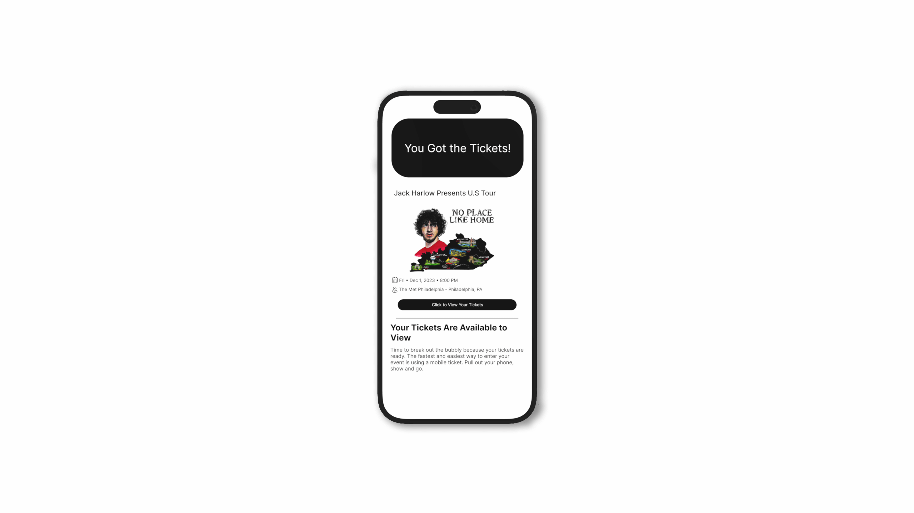

have ya heard?

case study:
have ya heard?, a music discovery app designed for superfans who crave deeper connections with their favorite artists. featuring curated playlists filled with niche tracks, the app highlights songs that only the most dedicated listeners know. by collaborating with platforms like ticketmaster, and live nation, have ya heard? offers personalized music recommendations after users buy concert tickets, creating an immersive experience that extends beyond the live show.
introduction
have ya heard?, a music discovery app designed for superfans who crave deeper connections with their favorite artists. featuring curated playlists filled with niche tracks, the app highlights songs that only the most dedicated listeners know. by collaborating with platforms like ticketmaster, and live nation, have ya heard? offers personalized music recommendations after users buy concert tickets, creating an immersive experience that extends beyond the live show.
our team
- raagavi venkatesh
- alex slogoff
- kellie minus
- dayoung lee
- simone devoe-caccavo
problems
for many fans, the excitement of a concert is often limited to the event itself, with no platform to extend the experience or discover new music related to artist. concert-goers miss opportunities to explore hidden gems and niche tracks that could enhance their appreciation for the artist.
objective
our objective was to create an application to integrate exploration, emotional regulation, productivity enhancement, and entertainment value into your listening playlist by implementing the spotify profile and using a comprehensive database.
our users
user 1:
- avid music lover and listener
- enjoys going to concerts even when she doesn't know the artist that well
- still wants to be able to know the songs and sing along
- not a super fan
user 2:
- avid music lover and listener
- enjoys going to concerts even when she doesn't know the artist that well
- still wants to be able to know the songs and sing along
our process
our goals
- solve the issue of access to niche songs
- implement it into spotify's existing system and connecting it to concert ticket purchases
- utilizing user information to compile lists of distinctive songs
our business concept
the start
taking data from the superfans of that artist and finding what songs they frequently listened to
the development
creating a playlist called have ya heard? filled with those "niche" songs that only the superfans know
collaborating with platforms like ticketmaster and live nation to display these playlists after user buys tickets
the solution
limitations
dependence on partnerships
- the app's integration with platforms like ticketmaster and live nation is essential for delivering personalized concert-related recommendations. however, if these partnerships can't be secured or maintained, it may limit the app's ability to enhance the concert experience as intended
niche audience appeal
- while superfans are dedicated, they represent a smaller segment of the general music-listening audience. this could impact the app's ability to scale and attract a broad user base, limiting its reach and potential for growth
competition with mainstream streaming services
- major streaming platforms offer extensive music libraries and personalized playlists. competing with these well-established services for user attention may be challenging, especially if they already fulfill some of the app's niche discover features
our prototype
click here to view the initial prototype!
our initial idea was to create a prototype that worked alongside ticketing applications, like ticketmaster. this would allow users to immediately be able to connect with their favorite artists after buying tickets, and receive personalized recommendations for their favorite artists and genres. this was probably the easiest approach, but also an unrealistic approach because the app would be dependent on ticketing platforms.
takeaways
future applications
artist-generated content
- collaborating with artists to create exclusive content for superfans, such as personal playlists, commentary on rare tracks, or behind-the-scenes stories, could enhance the app's appeal
- would provide superfans that unique insight into their favorite artists and deepen their connection
social features for fan communities
- building out social features, such as fan forums and group playlists, could create a more interactive community
- users could discuss their favorite hidden tracks, share rare finds, or even co-create playlists with friends or other superfans
concert and event notifications
- by collaborating with other ticketing agencies, users are able to get those personalized notifications about upcoming concerts, tailored to the user's favorite artists and genres